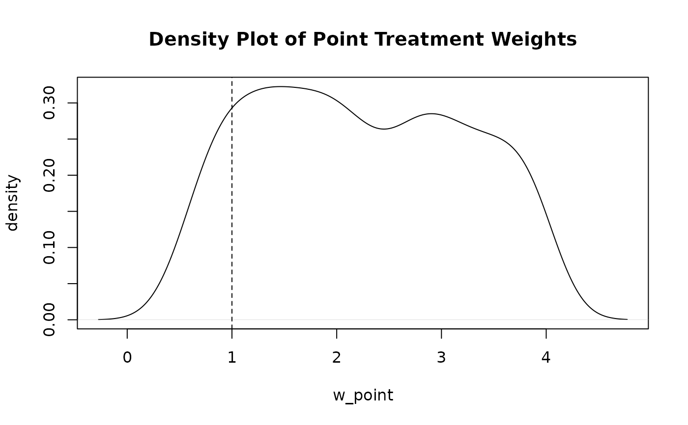
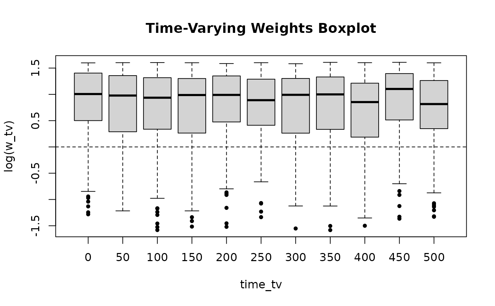

Plots the distribution of inverse probability weights. Displays a density plot for point treatment weights or boxplots across follow-up intervals for time-varying weights.
Usage
ipwplot(
weights,
timevar = NULL,
binwidth = NULL,
logscale = TRUE,
xlab = NULL,
ylab = NULL,
main = "",
ref = TRUE,
...
)Arguments
- weights
Numerical vector of inverse probability weights.
- timevar
Optional numerical vector of follow-up time.
- binwidth
Interval width for grouping follow-up time when
timevaris supplied.- logscale
Logical; if
TRUE, weights are plotted on a log scale. Default isTRUE.- xlab
Horizontal axis label.
- ylab
Vertical axis label.
- main
Main plot title.
- ref
Logical; if
TRUE, adds a reference line at 1 (or log(1) = 0).- ...
Additional graphical parameters passed to
boxplotorplot.
Author
Willem M. van der Wal willem@vanderwalresearch.com, Ronald B. Geskus rgeskus@oucru.org
Examples
# Point treatment weights density plot
set.seed(123)
w_point <- runif(500, 0.5, 4)
ipwplot(weights = w_point, logscale = FALSE, main = "Density Plot of Point Treatment Weights")

# Time-varying weights boxplot across follow-up strata
w_tv <- runif(1100, 0.2, 5)
time_tv <- rep(seq(0, 500, by = 50), each = 100)
ipwplot(weights = w_tv, timevar = time_tv, binwidth = 50, main = "Time-Varying Weights Boxplot")
